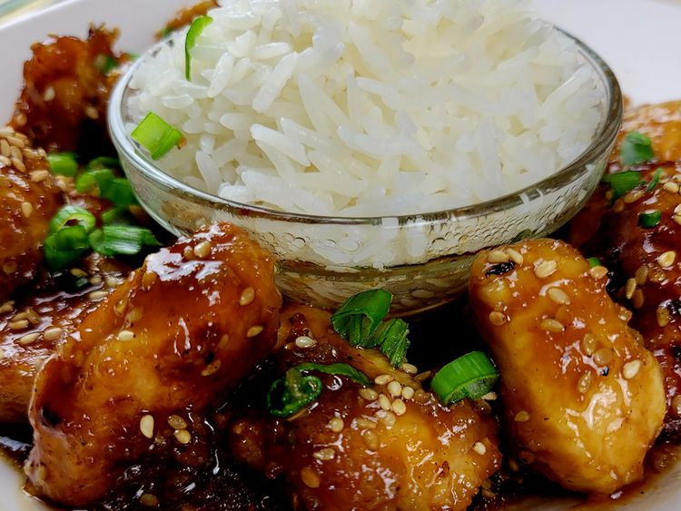

Sesame Chicken

Description
A go-to takeout order for many, myself included, this sweet-and-savory dish is a beloved staple of Asian cuisine.
Ingredients
- ½ cup cornstarch
- 1 tsp. salt
- ½ tsp. freshly ground black pepper
- ¼ cup vegetable oil
- ¼ cup honey
- ¼ cup reduced-sodium soy sauce
- ¼ cup rice vinegar
- 1 tbsp. chile-garlic sauce
- 2 tsp. fresh ginger root, minced
- 2 tsp. sesame oil
- 2 tbsp. toasted sesame seeds, divided
- 4 skinless, boneless chicken breast halves, cut into bite-sized pieces
- 2 cloves garlic, chopped
- 2 green onions, chopped
Directions
- Whisk cornstarch, salt, and black pepper together in a large bowl; add chicken and toss to coat.
- Heat oil in a skillet over medium-high heat. Fry chicken in batches, turning occasionally, until lightly browned, about 5 minutes.
- Whisk together honey, soy sauce, rice vinegar, chile-garlic sauce, garlic, ginger, sesame oil, and 1 tablespoon sesame seeds in a small bowl.
- Pour sauce over chicken in the skillet; toss to coat chicken. Reduce heat to medium-low and simmer until chicken reaches an internal temperature of at least 74°C (165°F).
- Sprinkle with remaining sesame seeds and green onions, and serve.